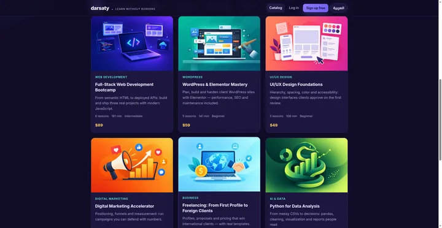
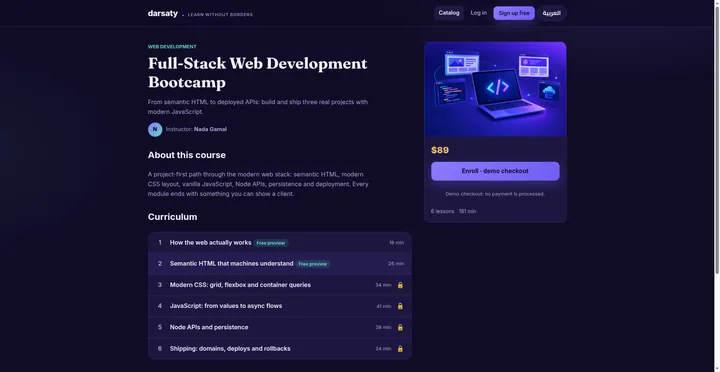
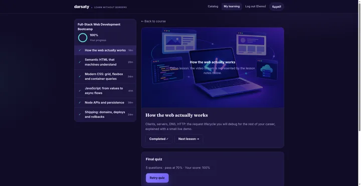
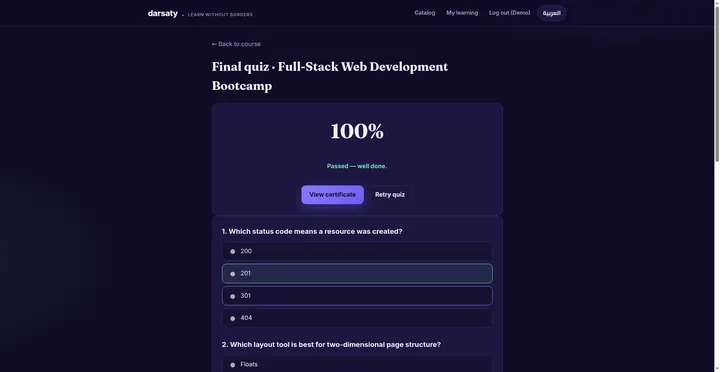
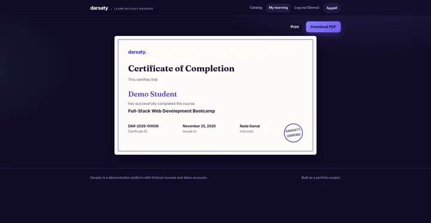
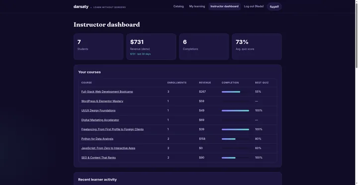
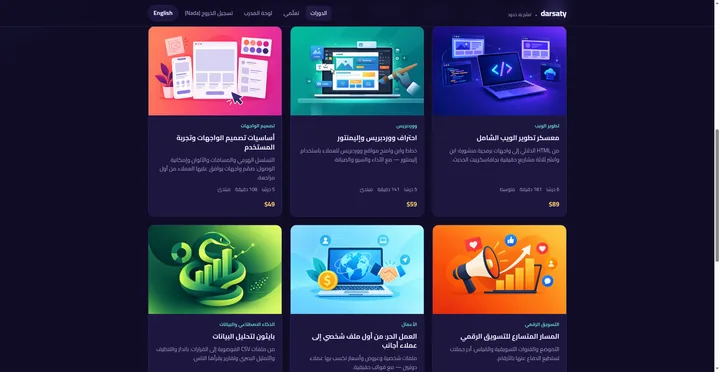

PORTFOLIO DEMO / BUILT / LIVE DEMO
Darsaty
Learn without borders.
 ACTUAL BUILD
ACTUAL BUILDDarsaty · Home and catalog. Fictional demo data.
The problem
Arabic-speaking learners get course platforms that treat Arabic as an afterthought: broken right-to-left layouts, English-only certificates, no offline tolerance on shaky connections. Instructors who want to sell a small catalog do not need enterprise software; they need a page for the course, a player, a quiz and a number that says how it is going.
What was built
A bilingual course platform, English and Arabic with a full right-to-left layout. The public side has a catalog with live search and category filters, and course pages with curriculum, totals and free preview lessons. Students enrol in one click, get a learning page with a progress ring and lesson check-offs, sit a final quiz that is scored on the server with per-answer feedback and retries, and earn a certificate with a serial number, a PDF download, a printable view and a public verification link. Instructors get a dashboard with students, revenue, completion and average score per course, plus a form to create courses with lessons. Roles split student, instructor and admin. A service worker keeps the shell and visited lessons available offline and queues progress updates until the connection returns. Eight seeded courses ship with generated cover art, six learners and issued certificates.
The approach
No framework: a single-page app in plain JavaScript modules and one serverless API function behind a rewrite, so a warm instance serves a whole user flow. The rules live in a shared logic module tested as plain functions: search normalisation that folds Arabic diacritics and alef forms, quiz scoring, certificate eligibility and serials, progress and revenue stats. Storage is Vercel Blob behind a short-lived cache with write-through persistence: reads refresh on a tight TTL and force-reload when a session token is unknown, which keeps logins consistent across warm instances. Eighteen unit tests pass, and a scripted browser run against the live site walks the real student journey: sign up, log in, enrol, finish every lesson, pass the quiz at 100%, receive the certificate, then check the instructor dashboard and the Arabic interface.
The result
A live demo anyone can open. Sign in as a student (student@darsaty.app) or the instructor (instructor@darsaty.app), password Demo#1234 for both, or create a fresh account. The seeded student already holds a verifiable certificate, DAR-2026-00006.
Evidence & production limits
One shared demo workspace: accounts, enrolments and progress are visible to anyone with the demo passwords, and the demo passwords are public on purpose. Storage is demo-grade: Vercel Blob with a short cache, last writer wins, no per-user isolation. Records, people, prices and revenue are fictional and covers are generated illustrations. Enrolment is one click; there is no payment step.
Known gaps: the certificate PDF is English-only (the bundled PDF font has no Arabic glyphs; the printable certificate view is fully bilingual), courses created from the dashboard form get lessons without a quiz (quizzes ship with the seeded courses), and lesson content is text, not hosted video. Implementation: AI-assisted (Instinct), with direction and scope from Nada Gamal.
Next chapter
A real database with per-user privacy, payments at enrolment, hosted video lessons, quiz authoring in the dashboard and an Arabic-capable PDF font would be the next implementation steps.
Inside the build
Open any preview to see the full capture. Captures show test or demonstration content. All records shown are demonstration content, not evidence of client use.






